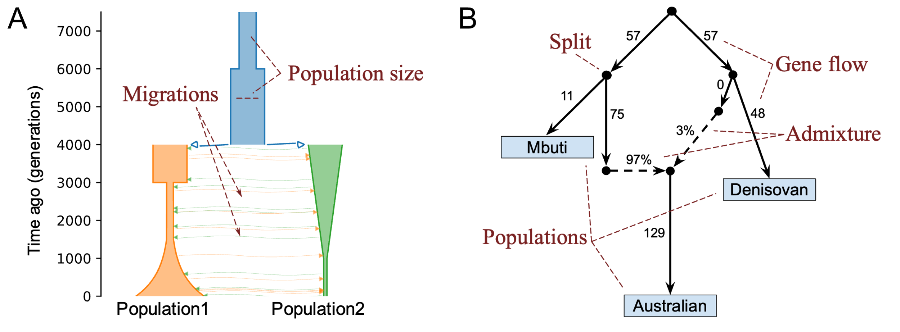
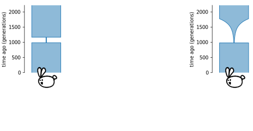
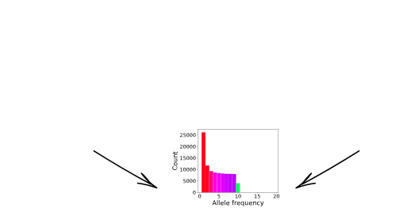
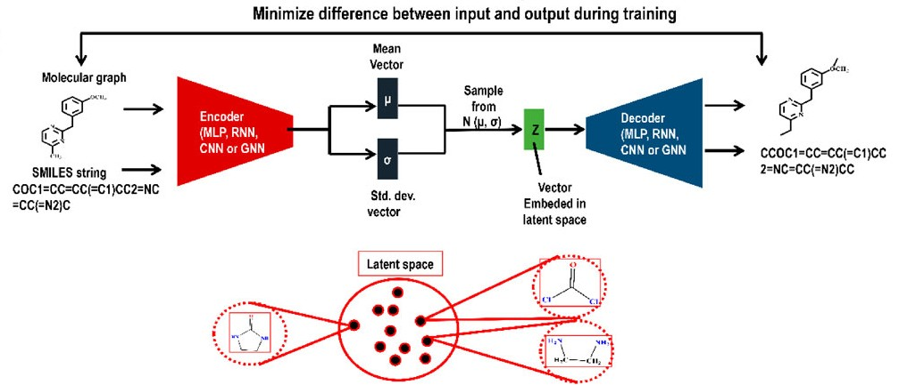
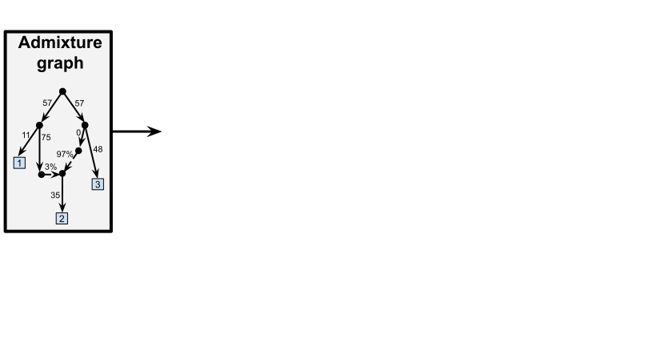
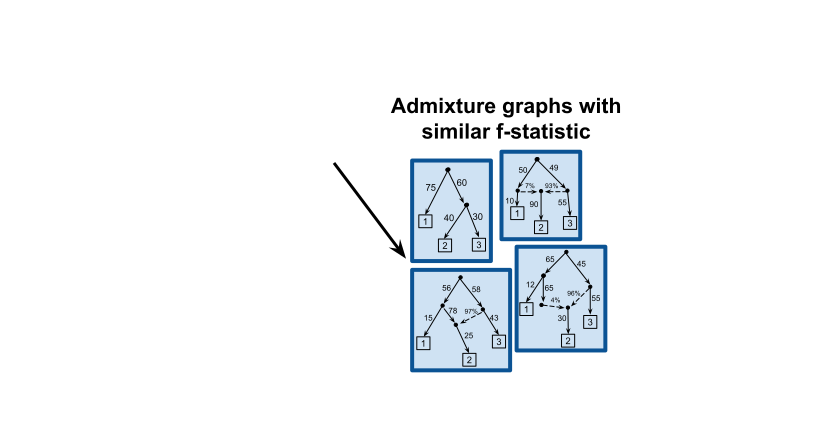
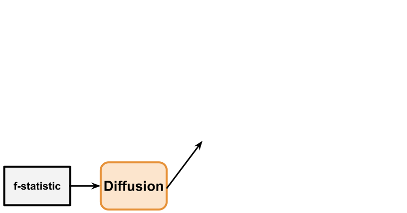

Demographic History
Demographic History
Demographic History
Demographic history describes how populations evolved over time.

It includes events such as:
- population size changes
- splits
- migrations
- admixture
- selection
Why Reconstruct
Demographic History
?
Understand population history


Why Reconstruct
Demographic History
?
Conservation biology studies


Demographic Inference
Demographic Inference


Maximum-likelihood
estimation
Model Non-identifiability Problem
Model Non-identifiability Problem
Model Non-identifiability Problem
There are some known examples of non-identifiable models:


However, generally classes are unknown
Generative AI
Generative AI
Generative AI models learn the underlying probability distribution of the training data, enabling them to generate new samples with similar characteristics.

Existing Applications
- Variational autoencoder for drug design [Gangwal et al. 2024]: 
- Discrete diffusion-like model for Bayesian sampling of phylogenetic trees [Zhou et al. 2024]
Proposed Approach
Train generative AI model to explore classes of non-identifiable demographic histories.




Applications
Once trained, a generative AI model enables a fast sampling procedure.
It allows to address various problems:
- Unravel complex admixture history of domesticated species (cattle)
- Investigate the regions that act as barriers to gene flow in recently diverged species (butterfly)
Team
Konrad
Lohse
Nikolay
Malkin
Gregory
Gorjanc
Thank you!

Slides: